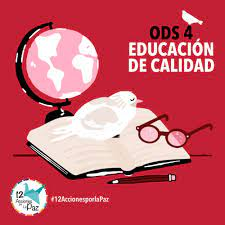

Principales Objetivos
- Garantizar una educacion inclusiva y promover oportunidades de aprendizaje permanente a todos .
- Garantizar que todos los niños y niñas cursen una educación primaria y secundaria gratuita .
- Acceso a la educación primaria y secundaria de todas las niñas y todos los niños .
-
Problemas con la educación en zonas rurales:
- En el mundo y particularmente en México son cobertura, pobreza, falta de profesores y un currículo que privilegia el sector urbano.
- Desconocimiento en el manejo de la tecnología y de sus aportes al aprendizaje.
- Escaso acceso a los recursos didácticos y pedagógicos de los cuales gozan las áreas urbanas..
-
los avances relacionados con las y los jóvenes en el alcance del Objetivo 4, reflejan datos como::
- El 88% de las y los jóvenes cuenta con estudios de educación secundaria y más.
- El Estado de México es la entidad en la que menos jóvenes asisten a la escuela.
- La tasa de analfabetismo de los jóvenes de 15 a 29 años es del 1.2 por ciento.
- Construir y mejorar instalaciones educativas :
- Tener en cuenta las necesidades de los niños, las discapacidades y las cuestiones de género.
- Aumentar la productividad y producción manteniendo la salud de los ecosistemas.
- proporcionar entornos de aprendizaje seguros, no violentos inclusivos y eficaces para todos .
-
promover oportunidades de aprendizaje permanente y gratuito para todos :
:
- Medidas como la gratuidad y obligatoriedad de la enseñanza,.
- Financiación de la educación debe convertirse en una prioridad nacional.
- aumento del número de profesores, la mejora de las infraestructuras escolares básicas y la transformación digital.
